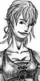

Les Terres de Kirin Tor
La souris
Points : 7

Joué par :
[ Information masquée ]
Age : 20
Lieu de naisance : Westfall
Sexe : Femme
Race : Humain
Faction : Alliance
Formation : Voleur
Niveau : 58
Guilde : Nature Rédemptrice (la)
Artisanat 1 : Herboriste
Artisanat 2 : Alchimiste
Envoyer un MP
Description : C'est comme une musique assourdissante. Les grosses gouttes de pluie sur le bois des pontons et des toits tambourinent et forcent l'entrée de son sommeil.
La jeune femme s'assoit dans le lit. Il ne fait pas encore tout à fait jour dehors. Obscurcit par les lourds nuages noirs de l'orage, le ciel garde encore un peu sa couverture sombre.
Elle repousse le drap et étire son corps moite et brun. Sur la peau mate de ses épaules retombent ses cheveux longs, pas très bien coupés. Ils ont la couleur rose-orangée du coucher de soleil sur les blés.
Elle attrape une chemise trop large pour elle et qui ne sent pas son odeur. Enfouissant son nez dedans, aspirant, et goutant à délice les éfluves restantes de son amant, ne depasse du tissu blanc que son regard violet qui rêvasse. Elle s'en revêt et avance jusqu'à la porte.
Jambes nues, appuyée contre le chambranle, l'orageuse pluie vient lui lecher ses pieds sales et habitués a marcher sans chaussures.
Son sourire éclaire son visage bronzé, constellé de taches de rousseur.
La violine de son regard guette le retour du reste de son âme, de beaucoup de sa vie, son loup, son fiancé...
A portée de mains, toujours, deux dagues sans apparat.
Des vêtements de cuir pas très bien entretenus attendent sur un coin du parquet.
Dans ces affaires, toute sa vie. Toutes ses aventures...
Ère du Renouveau [3]
Lune de la Force
Décade du Panda
Décade du Gorille
Décade de l'Ours
Lune d'Agilité [3]
Décade du Tigre [3]
C'est beau une ville la nuit, normalement !!
C'est beau une ville la nuit (episode 2)
C'est beau une ville la nuit... La premiere fois...
"spluuurch"
C'est l'premier bruit, la premiere sensation qu'j'ai eu la chance d'connaitre en entrant dans Stormwind.
- %@^# de canasson d'mes deux !!!!
Et voila ! Mes belles bottes toutes neuves !!!
C'pas vrai ça ! J'rentre dans la ville toute fière et un bouricot m'gache mon arrivée...
Elle avait pourtant choisi son heure, la souris, pour entrer dans la grande ville.
La nuit tombait, et le soleil sur sa gauche, illuminait d'une lueur de feu les deux enormes statues qui surplombaient les douves.
Elle ne pesta pas longtemps, submergée par la grandeur de ce qui l'entourait.
A petits pas, elle avança et n'osa pas trop lever les yeux vers le général Jonathan, profitant qu'un de ces lieutenants l'interpelle pour filer vers la porte.
J'ai rien à m'reprocher ! Non mais !... R'marque on sait jamais...
Il y a toujours du monde dans cette ville. Toujours de la lumière aux fenêtres. Toujours des gardes, des aventuriers...
Elle s'aventura au hasard, bien qu'on lui ait recommandé d'aller dans le vieux quartier.
Apres tout, elle ne venait pas se promener...
Les rues herbeuses l'étonnèrent au plus au point.
Il y avait de droles d'odeur dans les airs et les maisons semblaient ne pas manquer... de richesses.
Apatée, elle força un peu les ombres à la dissimuler et s'approcha d'une demeure.
Là haut... Ptite fenêtre ouverte... hé hé hé ! C'pour moi ça !!
Les poutres et le bois aidérent facilement cette sauvageonne à s'agripper comme elle pouvait.
De petites lueurs roses, puis bleues, puis vertes, puis jaunes, et ainsi de suite, eclairaient par intermitence l'interieur de la pièce autrement plongée dans la pénombre.
Un espece de sifflement doublé d'un espece de bouillonement aurait du la mettre en garde.
Elle risqua le haut de sa tête afin de voir à l'interieur. Il faisait sombre.
Personne là... Mmmm.... Personne là.... Ouééééé héhéhéhé !!
Elle se glissa agilement dans le laboratoire.
Les bruits provenaient d'alambics savament disposés sur une grande table.
Des coffres, des étagères...
...Trésors !!!
Sur la table, posé sur un socle, au milieu de l'enchevêtrement savant des tubes et autres bulles de verre, un éclat doré attira son regard.
...Gagné !!!
Une enorme pépite d'or. La souris ne savait pas beaucoup compter mais une telle grosseur lui vaudrait une fortune n'importe où.
Avide, elle s'approcha pour s'en emparer.
...wouahouuu !!!
Au creux de son gant, la pepite brillait.
Un peu trop...
Beaucoup trop...
Et puis soudain elle ne brilla plus et se mit a fumer, son éclat doré disparaissant pour une couleur plus marronée.
... ho ho ...
Elle allait reposer l'etrange caillou quand...
!!! SPLACH !!!
De pépite en caillou, son trésor mal gagné explosa en une espece de boue malodorante...
Le bruit avait surement alerté du monde, avant toute chose, la souris s'enfuit sans demander son rester par là où elle etait venue.
Elle ne s'arreta de courrir qu'une fois au bord du canal.
Pouah ! Misère ! Mais c'quoi c'te ville ?!!!
Elle se trempa et se lava comme elle pu, fort heureusement la boue ne semblait pas incruster ni son cuir ni sa peau.
Elle souffla un peu avant de repartir, maudissant qui elle pouvait...
Va en ville ! Mais si t'es prete !! Va faire tes preuves !! Triple buse !! jamais j'aurais du l'ecouter !!
Plus ou moins séchée, elle traversa le pont qui la mena dans des rues proprettes devant la cathédrale.C'est beau une ville la nuit (episode 3)
Quelques gardes, comme toujours, quelques prêtres...
Lui revinrent en mémoire quelques effluves d'un passé pas si lointain. Des sermonages en tirages d'oreilles, quelques coups de bâton parfois. Rien de bien... palpitant.
Elle ne se vit pas serrer les dents et les poings alors qu'elle se forçait a faire repartir ces souvenirs d'aussi loin qu'ils etaient venus.
N'en valent pas la peine ! Oh qu'non crédiou ! Y a rien là d'dans ! Pis c'tait pas moi ! Pas vraiment moi... Maint'nant c'est aut' chose... maint'nant c'est... palpitant.
Elle aimait ce mot. Palpitant.
Elle le trouvait chaud, fragile et fort. Il y avait tout un monde dans ce mot. Tant d'aventures. Toute une vie...
Elle avait retraversé un pont sans même s'en apercevoir. Pourtant, il faisait du bruit ce quartier... Les nains.
Quelqu'un venait, elle s'apprêtait à se faufiler derrière quelques caisses qui traînaient quand..
- Hé ! Qui va là ?
Le ton était bourru mais quelque peu... chantant.
La souris se ressaisit et d'une allure presque suffisante, avance vers le nain à la longue barbe qui l'a hêle.
- Oué ? Quoi ? Plus l'droit s'promener ?!
Le nain rouquin renifle et se racle la gorge en détaillant la jeune femme.
- Toi la donzelle, c'est la première fois qu'tu mets les pieds ici !!
Et il part d'un grand eclat de rire tonitruant en lui attrapant le bras avec une poigne de fer avant qu'elle ait pu esquisser le moindre geste.
- Allez ramène toi on va fêter ça !
- Mais ...
- Tssss ah ça suffit hein !! On ne vexe pas le nain qui t'invite à boire ! Tu ne voudrais pas me vexer, hein, la donzelle ?
- Heu ...
- Très bien ! T'as l'air d'une bonne fille ! HéHé
- ...
Elle était arrivée sans s'en rendre compte, dans une taverne bondée, pleine de musique et d'odeurs alcoolisées.
Elle fut assise sans autre forme de cérémonie entre deux nains qui la regardaient avec bienveillance et déjà pas mal de litres de bière dans la panse.
Devant elle, trônait déjà une chope d'une taille extraordinaire qu'elle aurait prit pour un seau si il n'avait pas été plus fin.
Elle se sentit épiée. Le rouquin et ses deux voisins la fixaient de leurs yeux pétillants et amicaux.
- Bah Trinque ! Qu'est ce que tu attends ?!!
Elle attrapa la chope en souriant, soudain détendue, trinqua avec les trois compères et avala sa première gorgée de vraie bière naine..
Par tous les fantômes d'Lordearon !!! Ces nains sont plus bruyants que tous les démons des abysses...[/i]
La jeune femme tenta bien de mettre ses mains sur ses oreilles, tentative pour atténuer le martèlement des marteaux, les claquements du fer chaud, les soufflets tonitruants.
Elle se fit croire que si elle ne marchait pas très droit, c'était à cause des vagues de chaleur émanant des forges de ce quartier bruyant.
La bière naine... T'en fout'rais moi ! D'la pisse de liche qui t'torture le crâne oui !!!
Et après quelques pas, sure que personne ne la verrait sourire, elle remit ses mains dans ses poches et s'éloigna.
L'aurore était là, avec ces volutes de brumes vaporeuses sur l'eau du canal. Il devait faire un peu frais ce matin.
Mais la souris avait chaud. De la chaleur de ceux qui en ont reçu sans rien demander. Comme une pluie vient rafraîchir les prairies assoiffées en plein été, elle, elle était ressortie de la taverne naine, l'âme guillerette, le coeur réchauffé par la bonne humeur, la jovialité d'un moment hors du temps.
Elle se massa la joue, encore un peu sensible d'avoir trop rit.
Mazette ! C'est qu'ça f'rait presque aussi mal qu'on bon coup d'poing !
Le vieux quartier commençait de s'animer.
L'air frais lui avait rosit les joues et desembrumé l'esprit et c'est sûrement son sourire bête qui attira une femme, tout colère qui lui serra le bras alors qu'elle lui demandait comme une prière de l'aider à se venger.
- Des foulards ! Ramenez moi ces foulards rouges !
La souris dégagea son bras dans un mouvement d'humeur.
Ca y est, la vie reprenait son cours normal...
Au coin là bas, un homme tâtait de sa canne devant lui en clamant la pitié pour être un pauvre aveugle.
Aveugle... Mes miches oui ! Il est aussi aveugle que chuis cul-d'jatte ! J'ten mettrais ma main à couper...
Elle se fit plus petite.
Elle regarda à droite.
Elle regarda à gauche.
Elle avança quand elle fut sure que personne n'arrivait dans la ruelle.
Les yeux rivés sur le visage de l'infirme, elle s'en approcha à pas furtifs jusqu'à se baisser pour toucher les quelques pièces qui la pitié inspirée avait fait tomber à ses pieds.
Le bras tendu, crispée comme prête à en découdre, elle touchait presque les piécettes d'argent quand...
-... pitié pour un pauvre aveugle ! A vot' bon coeur ! ... mais... mais quel est ce prodige ! J'y vois !! JE VOIS !!
J'en ai marre d'avoir raison !!!
La jeune femme avait filé à toute vitesse en grommelant.
Elle avait failli se faire arrêté par une bande de gamin tout aussi bruyants qu'un quartier nain et le martèlement dans sa tête avait failli reprendre.
Alors qu'elle s'écartait, la bâtisse derrière elle l'interpella.
Un homme appuyé négligemment contre le mur à l'entrée correspondait à la description qu'on lui avait faite.
Ben il était temps !
Elle rajusta un peu maladroitement sa veste, se rappela trop tard que c'est sa touffe de cheveux qu'elle aurait du rajuster et avança, le nez froncé en une moue revêche.
Elle faisait la fière mais son coeur palpitait fort.
Maintenant, ça allait commencer...
Décade du Singe
Décade du Faucon
Lune de l'Esprit
Décade de la Chouette
Décade de la Baleine
Décade du Lapin
Ère du Conflit [1]
Lune de la Force
Décade du Panda
Décade du Gorille
Décade de l'Ours
Lune d'Agilité [1]
Décade du Tigre [1]
Milles vies
J'avais vecu milles fois, milles aventures.
J'avais rit milles fois, milles fois j'avais pleuré.
J'avais vécu tant de fois, cherchant sans le savoir l'unique vie.
Je n'ai su que je la cherchais, qu'une fois que je l'eus trouvé...
Il y avait eu reponse à mon insolente provocation.
Son regard me défia d'approcher, je fus près de son corps, à lui de me humer...
De ce jour, je ne cesse de l'aimer.
J'avais vécu milles fois et avec lui ma vie a commencé...[/i]
- Chuis fiancée !!
Décade du Singe
Décade du Faucon
Lune de l'Esprit
Décade de la Chouette
Décade de la Baleine
Décade du Lapin
Troisième Ère [5]
Lune de la Force
Décade du Panda
Décade du Gorille
Décade de l'Ours
Lune d'Agilité [3]
Décade du Tigre [2]
C'est pas grand chose la vie...
Ca tient pas à grand chose, la vie.Initiation druidique
Un souffle. Un battement de coeur.
Un souvenir, une odeur, un baiser.
Un ptit quelquechose auquel se raccrocher.
Un grand bonheur, quelques rires, une bonne bière ?
Des semaines que j'avais embarqué ce sur maudit rafiot : j'avais signé un contrat, les gobelins aiment bien ça. Ils les rangent précautioneusement dans leur chemise, afiichant un air satisfait et suffisant.
J'aurais du me mefier du sourire de celui là.
J'aurais du prendre le temps de lire ce contrat. J'aurais mis de longue minutes a lire trois mots, j'aurais pensé qu'il avait été dommage de manquer trop l'ecole du village du Westfall où je suis née.
J'aurais du me mefier...
Mais voila, j'avais toujours rêver d'embarquer à bord d'un de ces trois mats que je voyais partir et arriver sans cesse de BootyBay.
C'était un boulot en or : escorter de la marchandise jusque l'autre continent. Facile ! On passerait plus de temps en mer que dans les Barrens, une aubaine...
J'aurais du me mefier...
J'aurais lu toutes les marchandises.
Et cet aller retour s'etait transformé en tour du monde.
Pas que ça me gêne.
Le boulot etait tout aussi facile.
Mais Mahel me manquait.
Mes trois mots sur les lettres étaient bien insuffisants pour decrire ce que je ressentais vraiment... Mais au moins là encore, il avait de mes nouvelles...
Et puis il a fallu que ça arrive.
Les pirates ne remontaient pas au nord.
Mais on était pas resté au nord, et dans les belles eaux claires du sud, nous nous sommes fait aborder.
Ce boulot n'était plus si facile...
De toutes façons la bataille fut rapide et par un heureux hasard, je me retrouvais dans les dernieres survivants.
Le capitaine pirate n'était pas cruel, il nous laissa le choix de sauter ou de rester sur sa galère.
Bah, j'aimais bien nager mais meme un banc et une grosse rame me semblait préférable.
J'ai regretté ce choix quelques fois, quand j'etais si fatiguée que je revais que je revais que je ramais, a moins que je n'ai toujours été eveillée ?
Il y eut bien quelques bagarres, mais nous etions bien traités et puis c'etait trop bete de mourrir comme ça, pour rien, loin de tous.
Alors j'attendais. Il y allait avoir un moment, quelquechose, n'importe quoi, mais je n'allais pas rester assise sur ce banc de galère. Non pas que je meritais mieux... J'avais d'autres projets et puis toujours me hantait ce manque. Ses yeux verts et ses sourires aimants...
Mon voisin de rame me regardait bizarement quand je souriais comme ça...
J'en etais presque rendue a prier cette Lumiere quand ce fut autre chose qui repondit à mes attentes...
La tempête était terrible : je songeais à Zach qui aurait vomit ses tripes et gueulé apres tous les dieux...
C'etait folie, mais j'esperais... On entendait les matelots craindre les cotes saillantes, et peu m'importait de savoir lesquelles.
Et le crac dans la coque fut comme une delivrance.
Mon voisin, accroché a la rame, me regarda une derniere fois sourire.
Il y eut l'eau et le sel, les roulements de tonerre et mes bras cherchant frénétiquement de quoi me raccrocher.
Survivre...
Le bois sous mes doigts etait détrempé mais je m'y accrochais de tout ce qui me restait de force.
J'ai eu un peu envie de pleurer je crois et je n'étais meme pas sauvée...
Bien arrimée à mon "canot" de sauvetage, j'ai du finir par m'endormir car c'est du sable dans la bouche et du soleil dans les yeux que je me reveillais bien plus tard...
Cela bruissait parfois. Sans brise. Sans le moindre souffle de vent.
Je restais des heures à ecouter le silence. Assise. Pas tout à fait endormie, mais délestée du poid du corps, aussi légère qu'une feuille.
Je pouvais percevoir les battements de mon coeur.
J'oubliais mes faiblesses, mes fatigues et mes peurs.
Cela battait parfois. Un autre coeur, que je laissais cogner contre le mien.
Je me laissais envahir de sa présence jusqu'au dernier moment. Jusqu'à ce que je manque de perdre le controle...
Cela bruissait parfois. Sans brise. Sans le moindre souffle de vent.
Je n'avais jamais prit le temps d'ecouter. Toujours pressée. Impatiente.
Meme a courrir à travers les champs, petite , je n'avais rien apprit.
Maintenant je savais. Un peu plus...
Mornaglar m'avait offert un drole de voyage. Au dedans de moi même. Au delà de mes boucliers, de mes chimèriques forteresses.
Maintenant je me connaissais. Un peu mieux...
Je comprennais enfin tout le sens de cette drole de notion : l'Equilibre...
Apres tout, je réalisais que nous n'etions tous que des acrobates.
Décade du Singe [1]
Mal de crane
J'étais epuisée. Afaiblie même. Sans compter ce putain d'mal de crâne qui me vrillait la tête des tempes à la nuque.
"Il" n'avait pas souvent prit le contrôle... Mais je destestais me sentir comme ça... après.
Et puis voilà c'etait arrivé, "il" était apparut à Mahel avant que je puisse lui en parler.
C'tait ma faute remarque. A force d'attendre, c'était devenu pire.
Mais comment le regarder en face et lui parler de ce que j'avais vécu ? De ce que j'avais en moi desormais ? De ce que j'avais apprit ? De ce que ça me faisait... de comprendre ?
Mais est-ce que j'aimais cette présence ? Qui etait-"il" en fait...
Rhaaaa et ce mal de crâne !!!!!
Bon...
Le temps qui passe, comme l'eau sous c'pont, il passe ptet pas assez vite.
C'pas les hommes qui sont différents, c'est juste c'qui font et où ils sont.
C'pour ça qu'on comprend pas les elfes.
Moi, j'ai d'jà oublié plein de choses de là bas. Ou plutot... c'est comme si j'les avais rêvé...
Pourtant y m'en reste queq'chose.
L'esprit déja...
Même pas envie d'en causer aux autres... Pas qu'j'ai des choses à leur cacher. Mais chais pas, ils arrivent pas à comprendre. Ptet que c'est moi qui les comprends pas... Ptet que chais pas comment leur expliquer...
Ptet que j'me suis trompée aussi...
Ptet qu'ils ont raison. Ou qu'on a tous tord...
Et puis cette ptite presence discrete qui s'fait plus grande...
<long soupir>
Quand j'rgarde autours de moi... j'ai l'impression d'avoir un peu fait marche arriere...
Pourquoi j'me sens si seule ?
Décade du Faucon
Lune de l'Esprit [2]
Décade de la Chouette [1]
Abandonner l'esprit...
L'endroit ressemblait à un rêve. De ceux qui vous emènnent dans des endroits improbables.
Le lac frémissait à peine sous une brise tiède. Chaque pas était doux et chaque respiration, une renaissance.
On ne pouvait que avoir envie de s'étendre près de l'eau et laisser sa main quérir un peu de fraicheur dans l'onde.
Sans même s'etonner qu'un noble cerf s'approche sans méfiance et vous regarde comme si vous aviez toujours été là, sans être surpris par la vénérable créature feuillue qui marchait lentement, sans se demander d'où venaient ces petits tintements incessants, on pouvait se consacrer alors à soi-même.
Pour peu qu'on en ai pas peur...
C'était donc là où j'avais choisi de fêter mon départ de "chez les elfes". Mornaglar et les siens m'avaient sauvé et guéri. Le druide ne m'avait pas parlé, il m'avait fait écouter. Il ne m'avait rien montré, mais fait observer.
Il ne m'avait rien offert, juste proposé.
Et malgré les discussions du vent avec les arbres, malgré les regards de certaines bêtes, malgré ces heures de recueillements où je m'étais enfin parlé à moi même, ou j'avais enfin prit le temps, malgré toutes ces choses fabuleuses, je ne croyais pas qu'un esprit qu'on apellait pouvait nous accompagner de la façon la plus intime qu'il soit...
J'etais donc assise sur un ancestral banc de pierre, avec une de ces liqueurs elfiques raffinées capable d'abattre un nain non préparé.
Il me tardait tant alors de retrouver mon amour et amant, les amis que j'avais enfin trouvé, de reprendre la route et la vie avec eux.
Je ne sais pas ce qui me poussa à defier mes idées préconçues... L'alcool surement, le doute aussi. Et si...
J'avais eu accès à des sensations que jusque là j'ignorais, je m'étais révéler à moi même, restait-il encore beaucoup à découvrir ?
Voila donc que j'étais debout - et un peu chancelante - ivre de chaleur alcoolisée, à balbutier des imprécations que je pensais être obligatoires pour ce genre de rite...
Je suis persuadée maintenant que le vrai rite est la simple volonté et la seule force que l'on met à apeller les esprits. L'endroit est prédisposé à ce genre de chose.
Lorsque je me suis reveillée le lendemain, j'ai cru qu'il ne s'était rien passé, il ne m'en restait que des bribes de rêve...
Mais l'esprit avait repondu, il était là, enfoui et il me fallu de nombreux jours pour enfin le percevoir assez pour le comprendre.
Je crois qu'il lui avait fallu moins de temps pour s'appercevoir à qui il avait à faire.
Ce n'est pas qu'il ne m'aimait pas, je crois même qu'il était capable d'être sympathique. Je pense qu'il avait beaucoup de chose à faire comprendre, apprendre. Il devait être impatient de pouvoir repondre à l'appel d'un éclairé, un elfe sage qui pourrait ecouter tout ce qu'il avait à dire depuis mille ans.
Je n'etais pas un elfe. Et encore moins sage...
Il destesta mon retour à la ville. Il exécra encore plus mes petites habitudes humaines, ma médiocrité mortelle...
Nous ne concevions rien pareillement.
Sans être des contraires, nous ne nous comprennions pas.
Il n'était pas vraiment méchant ou fou. Il aurait voulu que je sois quelqu'un d'autre et se maudissait surement d'avoir été si empressé de répondre à mon appel de viande saoule.
Il était fier et ne se laissa pas faire - au moins pour la forme - quand je decidais de nous separer.
Zach et Mahel veillait.
Je voyais et entendais depuis peu même quand j'etais sous sa forme à lui.
Son esprit était plus fort que le mien, il savait comment me faire taire, au moins un temps, il en profita pour se montrer une nouvelle fois odieux avec mes amis. Ce n'était pas tellement pour me punir, et c'est là que nous avions nos seules ressemblances, il était assez fier pour en devenir mesquin...
Sa force faiblissait, je fis le maximum pour que les autres entendent mes conseils. Il suffisait de le déconcentrer, en le frappant par exemple, pour que je puisse enfin exercer pleinement ma volonté et lui dire de partir, comme Mornaglar me l'avait expliquer.
Il avait raison, cela avait fonctionné finalement.
Mahel et Zach étaient furieux, je ne pouvais pas trop les en blamer, j'etais incapable de leur expliquer. Mais etaient-ils capable de comprendre de toutes façons ?
Moi... Moi j'en gardais un gout amer. Est-ce que je n'avais pas été à la hauteur ? Ou bien est-ce que je n'etais tout simplement pas faite pour cette cohabitation ?
Mornaglar était tout autant faché que mes amis qui venaient lui crier dessus.
J'avais une nouvelle fois fait un désastre, incapable d'exprimer ce qu'il s'etait passé. Incapable d'expliquer aux uns, de rassurer les autres.
J'en garderais surement une petite déchirure, mais il fallait avancer...
Si j'étais devenue plus forte, je n'allais pas me mettre à pleurer...
Décade de la Baleine
Décade du Lapin [1]
Mes Noces
Une éternité que j'n'avais pas prit l'temps d'grimper à cet arbre.
Il etait beaucoup plus grand dans mes souv'nirs...
C'que j'attends, c'est l'soleil qui va s'lever.
D'abord le sommet de la colline va disparaitre en flou comme quand on pleure.
Après les blés vont s'enflammer de rougeorangé.
Les Marches de l'Ouest. C'est juste là où chuis née. Est-ce que l'endroit où on commence à marcher nous façonne ?
Ma mère avait eu tord. J'me marrie avec un bel homme. Gentil, fier et fou. Forcément, il faut l'être plus qu'un peu pour être à mes cotés.
C'pas que chuis compliquée... J'en connais des tas qui gueulent pour etouffer le bruit d'leur grand coeur.
Chuis même pas remarquable, y a des filles comme moi dans tous l'royaume. Fières à blesser les autres, manqu'rait plus qu'ils pensent qu'on les aime bien !
Ma mère avait quand même eu tord, j'ai pas encore si mal finie.
J'vais m'marrier d'vant une pretresse. Une vraie d'la Lumière. C'pas d'la rigolade.
Et ça va s'faire là où chuis née. Les Marches de l'Ouest. C'tait pas un mauvais endroit pour apprendre à marcher.
Après demain, à l'heure où les étoiles ont juste fini d'se faire belles pour commencer la nuit, on s'ra tous reunis.
Est-ce qu'ils viendront au moins ?
Bah, au pire ils viendront pour Mahel. L'a toujours su les ecouter lui. Il sait comment leur parler, ça lui fait pas peur... Il est bien plus courageux qu'moi en fait.
Ce s'ra une belle fête. Il faut qu'elle le soit... On s'marrie qu'une fois non ?
Quatrième Ère [1]
Lune de la Force [1]
Décade du Panda [1]
Tous les cadeaux du ciel
De quel couleur etait le ciel ?
Combien d'étoiles ? La lune ?
Ce qu'ils avaient mangé ? Ce qu'ils avaient bu ?
Combien de sourires, de bisous, de mains sur l'epaule ?
De quelles couleurs les robes ? Combien d'étincelles au coin des yeux de leurs amis ?
Tout etait deja loin. Déjà de l'ordre de ces souvenirs heureux.
Mais il y avait une chose, elle, qui ne s'estompe pas. Qui, sans vraiment grandir, veille comme le feu couve.
Quelquechose de chaud toujours à portée de coeur.
L'Amour...
Ahhh quelle adorable insensée, quelle idiotie merveilleuse...
Et puis quel cadeau. Sans papier, sans carton à ouvrir, sans rien à toucher que leurs mains et le reste de leur peau.
Un seul souffle finalement, quand les battements des coeurs frappent à leur tempes comme pour ouvrir des portes evanescentes. De celles qui menent à des endroits connus des amoureux seuls.
Et Mahel l'y avait mené.
Il avait dit oui. Oui pour toute la vie. Il ne verrait plus qu'elle, elle n'avait d'yeux que pour lui.
Elle avait dit oui.
Elle n'avait eu que ça à faire.
Elle s'etait laissé porter jusqu'à cet evènement comme on laisse la mer monter sur la plage.
Elle etait arrivé là où elle avait toujours vécu, accueillie par des gens qu'elle avait toujours connu.
Et c'est lui qui avait fait tout ça.
C'est lui qui avait choisis les vins et les mets.
Lui qu iavait su trouver les mots pour que Yaëlle officie et rende tout officiel, devant les hommes et la Lumière.
Il avait tout fait. Tout réussi.
Elle l'avait regardé, sans trouver autre chose à faire que sourire et sourire encore.
Comment le remercier ?
Elle l'a embrassé, lui qui dormait encore sous le soleil levé.
Elle l'a embrassé puisqu'elle l'aimait.
Elle avait desormais toute la vie pour le remercier...
Décade du Gorille
Décade de l'Ours
Lune d'Agilité
Décade du Tigre
Décade du Singe
Décade du Faucon
Lune de l'Esprit
Décade de la Chouette
Décade de la Baleine
Décade du Lapin